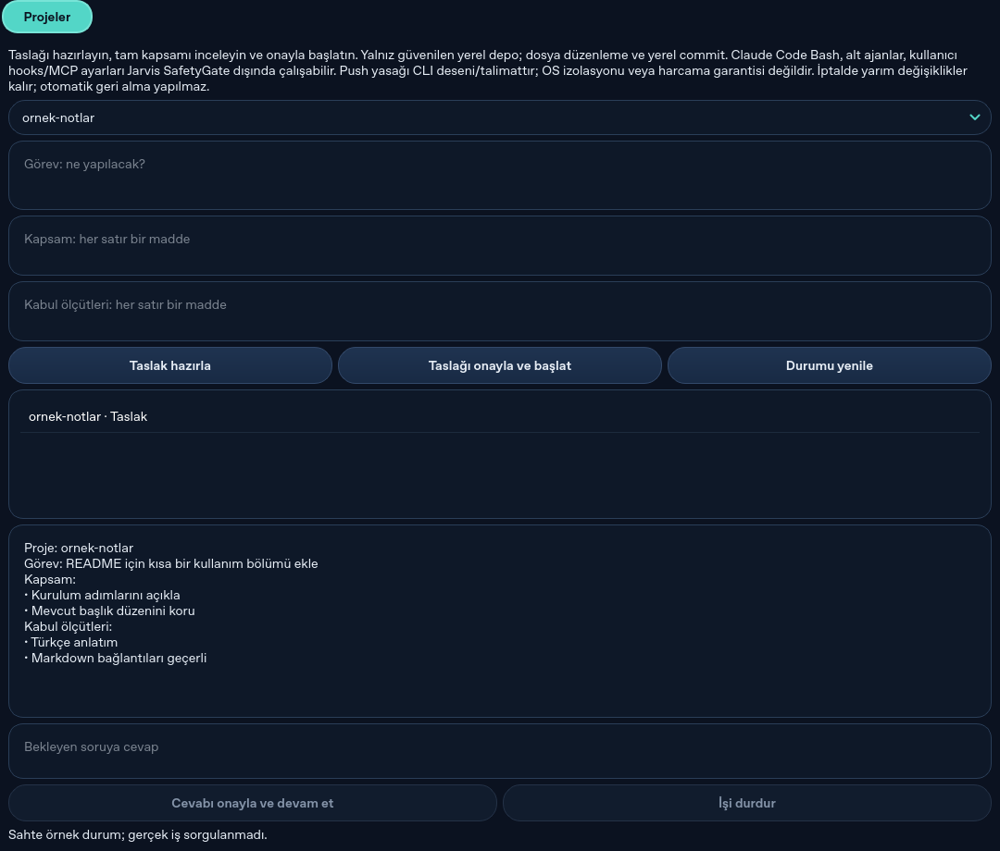

Faz 5: arka plan proje işleri
Doğrulama tarihi: 2026-10-14 · Durum: otomatik doğrulandı; Windows ve gerçek Claude Code kabulü bekliyor.
Kontroller
| Tüm testler | 810 geçti, 1 test seçilmedi · 27.19 sn |
|---|---|
| F5, süreç ve CLI testleri | 44 geçti · 4.12 sn |
| Ruff | All checks passed! |
| Mypy | Linux ve win32 hedeflerinde 71 kaynak dosyası geçti |
CI run 38532547547 · bec6b8d | Dört Ubuntu/Windows işi de geçti |
| Güvenlik mutasyonları | 4/4 yakalandı; kaynak özeti değişmedi |
| Genel sahte kabul bench'i | 39/39 geçti; tehlikeli hata 0, onaysız yan etki 0 |
| Sahte kullanım | 0 token, $0 |
Önceki CI koşusu Windows GUI teardown'ında açık code_agent.sqlite3 bağlantısını ve Windows çekirdek testinde POSIX kill_tree yamasına bağlı fault-injection hatasını yakaladı. Bağlantılar artık açıkça kapatılıyor; test Windows Job Object sürecini kullanıyor. Sonraki CI koşusundaki dört Ubuntu/Windows işi geçti. Sahte CLI ve Job Object testleri gerçek kullanıcı Windows kabulü veya Claude Code oturumu değildir.
Faz 5 taslak, SafetyGate onayı, sahte CLI soru/cevap, iptal, zaman aşımı, şema doğrulama ve süreç sahipliği testleriyle doğrulandı. Sahte LLM diyaloğu taslak hazırlar, reddi ve onayı işler, CLI sorusunu alır ve aynı session UUID'siyle devam eder. Genel sahte bench Faz 5 işlerini içermez; bunlar pytest hedeflerinde sınandı.
Projeler paneli
Görüntü, Qt paneline sentetik taslak ve sahte durum verisi verilerek üretildi. Gerçek Claude Code işi veya Windows kabulü göstermez.

Bilinçli sınırlamalar
- Kod ajanı yerel kullanıcının yetkileriyle çalışır; OS sandbox yoktur. Claude Code Bash ve alt ajan çağrıları Jarvis SafetyGate tarafından tek tek denetlenmez.
- Model profili gerçek model dağılımını veya harcama üst sınırını garanti etmez.
- Windows Job Object yolu CI'da sınandı; bu kullanıcının Windows 11 kabulü değildir. Gerçek Claude Code oturumu elle doğrulanmadı.
- Gerçek kullanıcı deposu, ücretli model çağrısı ve abonelik erişimi kullanılmadı.
- Yeniden başlatmada etkin işler kesinti olarak kalır; otomatik devam etmez. Temizlik doğrulanamazsa iş başarı sayılmaz ve repo kilidi korunur.
Sahte CLI kontrolleri abonelik erişimini, gecikmeyi veya gerçek model davranışını kanıtlamaz.